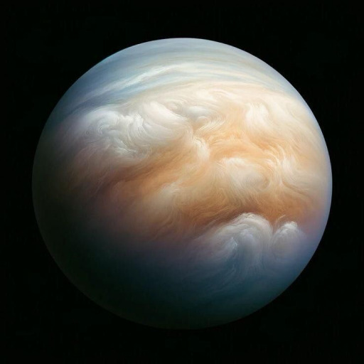

Здесь вы можете выгодно приобрести планету
Меркурий
Меркурий - первая планета от солнца, на ней довольно жарко, но она богата относительно полезными ресурсами. Если вам нужно железо, то меркурий будет хорошим выбором для вас. Учитывайте, что планета небольшая, а еще на ней довольно жесткие перепады температур. Но железное ядро стоит того.
Вненера
Венера - уникальна, потому стоит немалых денег. Год на ней быстрее суток, а вращается она против часовой стрелки (в отличие от остальных планет). У нее очень маленький угол наклона, высокие температура и давление. Есть облака из серной кислоты, а угол наклона всего 3 градуса

Земля
Земля - единственная населенная планета. Населена людишками, потому и стоит так дешево. Лично я рекомендую вычистить эти штуки чем-нибудь подходяжим. Но у этой планеты есть и хорошие стороны - ее атмосфара состоит из почти уникальной смеси азота, кислорода и двуокиси углерода. Я бы купил только ради этого. А еще у нее спутник есть

Марс
Марс - красный шарик, последний из "земной группы". Возможно когда-то он был населен, хз. В общем условия на нем почти как на земле, только атмосферы нормальной нет (и людей, поэтому стоит дороже). Имеет два преславутых спутника, но они не особо интересны. Кстати красный он из-за оксида железа.